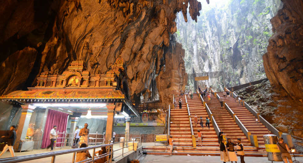

My Adventure at Batu Caves: A Perfect Blend of Spirituality and Thrill
by Thomas on 2024-08-16

As I set out for Batu Caves, just 13 kilometers north of Kuala Lumpur, I could feel the excitement building. Nestled amidst lush greenery, this limestone hill is more than just a geographical marvel—it's a captivating blend of spiritual serenity and outdoor adventure.
Arriving at the base of the hill, I was immediately struck by the grandeur of the Batu Caves temple. The towering statue of Lord Murugan stood majestically against the backdrop of steep, rugged cliffs, making for a truly awe-inspiring sight. I climbed the iconic 272 steps to reach the temple entrance, each step offering a glimpse of the vibrant cultural and spiritual life that thrives within these ancient caves.
Once inside, I was enveloped by the echoing sounds of worship, the mesmerizing colors of the temple walls, and the profound sense of history. It’s a place where spirituality blends seamlessly with adventure.
Exploring the Caves
After visiting the main temple, I ventured deeper into the caves, exploring the different chambers, each adorned with unique religious statues and idols.
The cool air inside the caves was a refreshing contrast to the outside heat, and the sight of the intricate carvings and nature’s artistry was nothing short of breathtaking.
Conclusion
Batu Caves is not just a destination; it's an experience that leaves you enriched, offering both spiritual rejuvenation and an adrenaline rush. Whether you seek peace, adventure, or culture, this place has it all.